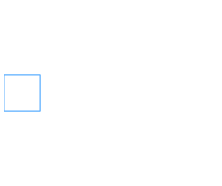
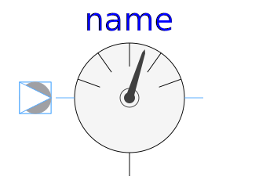

This package contains connector specifications and partial models for more complex components.
| Name | Description |
|---|---|
|
|
Quasi-static single-phase pin |
|
|
Positive quasi-static single-phase pin |
|
|
Negative quasi-static single-phase pin |
|  TwoPin | Two pins |
| OnePort | Two pins, current through |
|
|
Partial potential sensor |
|  RelativeSensor | Partial voltage / current sensor |
|
|
Partial voltage / current source |